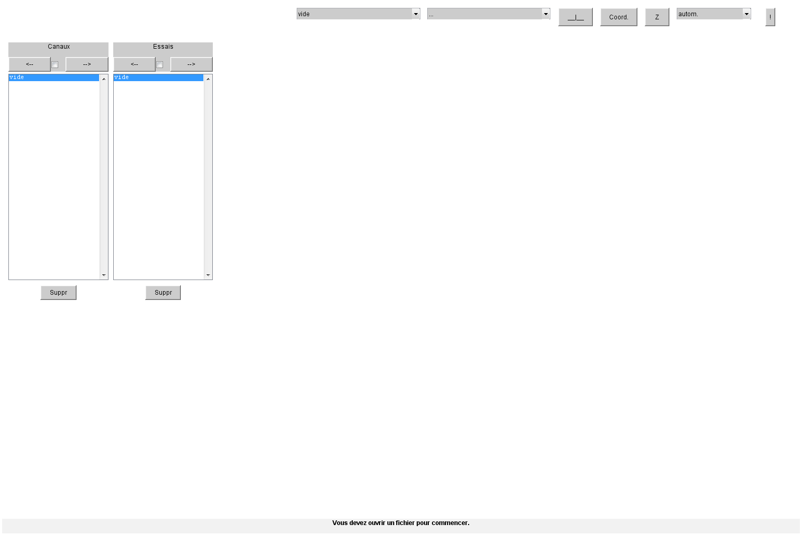

Cette fonction va définir les path utiles pour travailler avec Analyse puis va démarrer Analyse. Mais avant tout, il faut avoir downloadé les dossiers nécessaires comme suit, soit que l'ensemble des dossiers est regrouppé dans "src"
src/ src/startAnalyse.m analyse/ Cgrame/ Cml/ doc/ emg/ Igrame/ install/ lang/ Outil/ communs/ CGrame/
Le fichier "startAnalyse.m" se trouve dans "src/analyse/install" Faites-en une copie dans le dossier "src" pour lancer "startAnalyse", placez-vous dans le dossier "src"
Si l'affichage des caractère accentués se fait mal, appelez "startAnalyse" avec le paramètre "1", soit startAnalyse(1) Ceci aura pour effet de recréer les fichiers contenant la structure des strings pour les différentes langues dans l'environnement que vous utilisez.
function startAnalyse(LANGUE, varargin) % Comme on va travailler avec les paths, il faut savoir dans quel OS on travaille % le caractère pour Séparer les Dossiers sera SD =filesep(); % On va récupérer le path complet du fichier "startAnalyse.m" moi =which('startAnalyse'); % On va en extirper le path [bpath, fnom] =fileparts(moi); % Au cas ou 'startAnalyse' serait encore dans "src/analyse/install" txtpath =[SD 'analyse' SD 'install']; ltxt =length(txtpath); if strcmp(bpath(end-ltxt+1:end), txtpath) bpath(end-ltxt+1:end) =[]; end % fabrication du path à ajouter bpath_an =[bpath SD 'analyse;']; bpath_anCg =[bpath SD 'analyse' SD 'Cgrame;']; bpath_anCml =[bpath SD 'analyse' SD 'Cml;']; bpath_anEmg =[bpath SD 'analyse' SD 'emg;']; bpath_anIg =[bpath SD 'analyse' SD 'Igrame;']; bpath_anOu =[bpath SD 'analyse' SD 'Outil;']; bpath_anBat =[bpath SD 'analyse' SD 'batch;']; bpath_com =[bpath SD 'communs;']; bpath_comCG =[bpath SD 'communs' SD 'CGrame;']; An_path =[bpath_an bpath_anCg bpath_anIg bpath_anCml bpath_anEmg bpath_anOu bpath_anBat bpath_com bpath_comCG]; % Maintenant il faut savoir si on est en Matlab ou en Octave % les deux environnements utilisent la fonction ver() matlab =isempty(ver('Octave')); %------------------------------------------------------------------- % Pour ceux qui ne veulent pas faire un reset des Paths déjà établis % conserver uniquement les lignes "addpath..." ci-bas %------------------------------------------------------------------- if matlab % on travaille avec Matlab % le path par défaut sera ré-installé par restoredefaultpath() restoredefaultpath(); % maintenant on va ajouter les path pour Analyse addpath(An_path); else % on travaille avec Octave % La commande pathdef(), nous renvoie la liste des paths pour Octave pdef =pathdef(); % on va resetter le path à partir des valeurs obtenues path(pdef); % maintenant on va ajouter les path pour Analyse addpath(An_path); % on va changer la valeur par défaut pour la sauvegarde des fichiers save_default_options ('-v7'); end if exist('LANGUE','var') reInitLangue([bpath SD 'analyse' SD 'lang'], [bpath SD 'analyse' SD 'doc' SD]); mots =sprintf('Les base de données multi-langues sont recrées.\n'); disp(mots); end % On peut maintenant démarrer Analyse mots =sprintf('Les paths sont définis.\nLancement d''Analyse...'); disp(mots); analyse(); end function reInitLangue(lePathSrc, lePathDest) % pour revenir dans le path original, on sauvegarde où on est. lePath =pwd(); % on se transporte dans le dossier qui a les mfiles utiles pour recréer les bd cd(lePathSrc); % on va lancer les fonction "langue_xx.m" ou le xx sera: fr, en, es ... langue_fr([lePathDest 'fr.mat']); langue_en([lePathDest 'en.mat']); langue_es([lePathDest 'es.mat']); % le trvail est fini, on retourne dans le dossier de départ cd(lePath); end
Les paths sont définis. Lancement d'Analyse...